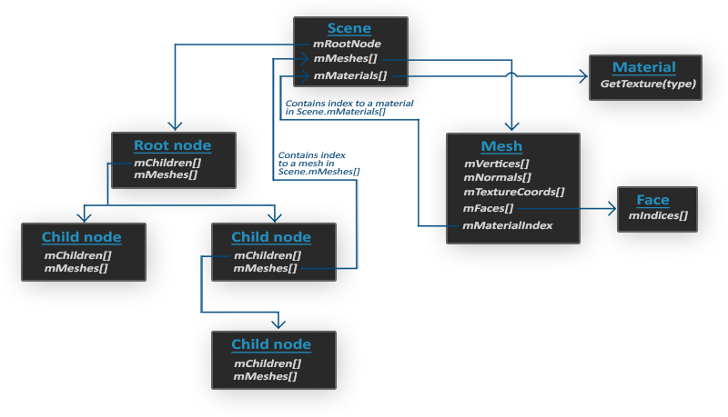

Assimp
| 原文 | Assimp |
|---|---|
| 作者 | JoeyDeVries |
| 翻译 | Cocoonshu, Krasjet, Geequlim |
| 校对 | 暂未校对 |
到目前为止的所有场景中，我们一直都在滥用我们的箱子朋友，但时间久了甚至是我们最好的朋友也会感到无聊。在日常的图形程序中，通常都会使用非常复杂且好玩的模型，它们比静态的箱子要好看多了。然而，和箱子对象不同，我们不太能够对像是房子、汽车或者人形角色这样的复杂形状手工定义所有的顶点、法线和纹理坐标。我们想要的是将这些模型(Model)导入(Import)到程序当中。模型通常都由3D艺术家在Blender、3DS Max或者Maya这样的工具中精心制作。
这些所谓的
所以，我们的工作就是解析这些导出的模型文件以及提取所有有用的信息，将它们储存为OpenGL能够理解的格式。一个很常见的问题是，模型的文件格式有很多种，每一种都会以它们自己的方式来导出模型数据。像是Wavefront的.obj这样的模型格式，只包含了模型数据以及材质信息，像是模型颜色和漫反射/镜面光贴图。而以XML为基础的Collada文件格式则非常的丰富，包含模型、光照、多种材质、动画数据、摄像机、完整的场景信息等等。Wavefront的.obj格式通常被认为是一个易于解析的模型格式。建议至少去Wavefront的wiki页面上看看文件格式的信息是如何封装的。这应该能让你认识到模型文件的基本结构。
总而言之，不同种类的文件格式有很多，它们之间通常并没有一个通用的结构。所以如果我们想从这些文件格式中导入模型的话，我们必须要去自己对每一种需要导入的文件格式写一个导入器。很幸运的是，正好有一个库专门处理这个问题。
模型加载库
一个非常流行的模型导入库是Assimp，它是Open Asset Import Library（开放的资产导入库）的缩写。Assimp能够导入很多种不同的模型文件格式（并也能够导出部分的格式），它会将所有的模型数据加载至Assimp的通用数据结构中。当Assimp加载完模型之后，我们就能够从Assimp的数据结构中提取我们所需的所有数据了。由于Assimp的数据结构保持不变，不论导入的是什么种类的文件格式，它都能够将我们从这些不同的文件格式中抽象出来，用同一种方式访问我们需要的数据。
当使用Assimp导入一个模型的时候，它通常会将整个模型加载进一个场景(Scene)对象，它会包含导入的模型/场景中的所有数据。Assimp会将场景载入为一系列的节点(Node)，每个节点包含了场景对象中所储存数据的索引，每个节点都可以有任意数量的子节点。Assimp数据结构的（简化）模型如下：

- 和材质和网格(Mesh)一样，所有的场景/模型数据都包含在Scene对象中。Scene对象也包含了场景根节点的引用。
- 场景的Root node（根节点）可能包含子节点（和其它的节点一样），它会有一系列指向场景对象中mMeshes数组中储存的网格数据的索引。Scene下的mMeshes数组储存了真正的Mesh对象，节点中的mMeshes数组保存的只是场景中网格数组的索引。
- 一个Mesh对象本身包含了渲染所需要的所有相关数据，像是顶点位置、法向量、纹理坐标、面(Face)和物体的材质。
- 一个网格包含了多个面。Face代表的是物体的渲染图元(Primitive)（三角形、方形、点）。一个面包含了组成图元的顶点的索引。由于顶点和索引是分开的，使用一个索引缓冲来渲染是非常简单的（见你好，三角形）。
- 最后，一个网格也包含了一个Material对象，它包含了一些函数能让我们获取物体的材质属性，比如说颜色和纹理贴图（比如漫反射和镜面光贴图）。
所以，我们需要做的第一件事是将一个物体加载到Scene对象中，遍历节点，获取对应的Mesh对象（我们需要递归搜索每个节点的子节点），并处理每个Mesh对象来获取顶点数据、索引以及它的材质属性。最终的结果是一系列的网格数据，我们会将它们包含在一个Model对象中。
Important
网格
当使用建模工具对物体建模的时候，艺术家通常不会用单个形状创建出整个模型。通常每个模型都由几个子模型/形状组合而成。组合模型的每个单独的形状就叫做一个
在下一节中，我们将创建我们自己的
构建Assimp
你可以在Assimp的GitHub页面中选择相应的版本。本文使用的Assimp最高版本为3.1.1。我们建议你自己编译Assimp库，因为它们的预编译库并不一定能适用于所有系统。如果你忘记如何使用CMake自己编译一个库的话，可以复习创建窗口小节。
构建Assimp时可能会出现一些问题，所以我会将它们的解决方案列在这里，便于大家排除错误：
- CMake在读取配置列表时，不断报出DirectX库丢失的错误。报错如下：
Could not locate DirectX
CMake Error at cmake-modules/FindPkgMacros.cmake:110 (message):
Required library DirectX not found! Install the library (including dev packages)
and try again. If the library is already installed, set the missing variables
manually in cmake.
如果你之前没安装过的话，那么这个问题的解决方案是安装DirectX SDK。你可以从这里下载SDK。
- 安装DirectX SDK时，可能遇到一个错误码为
s1023的错误。这种情况下，请在安装SDK之前先卸载C++ Redistributable package(s)。
一旦配置完成，你就可以生成解决方案文件了，打开解决方案文件并编译Assimp库（可以编译为Debug版本也可以编译为Release版本，只要能工作就行）。因为所有的LearnOpenGL代码都是64位项目，所以请确保在64位下编译这个库。
使用默认配置构建的Assimp是一个动态库(Dynamic Library)，所以所生成的assimp.dll文件（文件名可能带有后缀）需要随我们的程序可执行文件一并包含，你可以简单地将DLL复制到我们程序可执行文件的同一目录中。
Assimp编译之后，生成的库和DLL文件位于code/Debug或者code/Release文件夹中。接着把编译好的LIB文件和DLL文件拷贝到工程的相应目录下，然后在解决方案中链接它们。并且记得把Assimp的头文件也复制到你的include目录中（头文件可以在下载的Assimp文件中的include目录里找到）。
如果你仍遇到了未报告的错误，欢迎在评论区中寻求帮助。
现在，你应该已经编译完Assimp库并将它链接到你的程序中了。下一步：导入漂亮的3D物体！